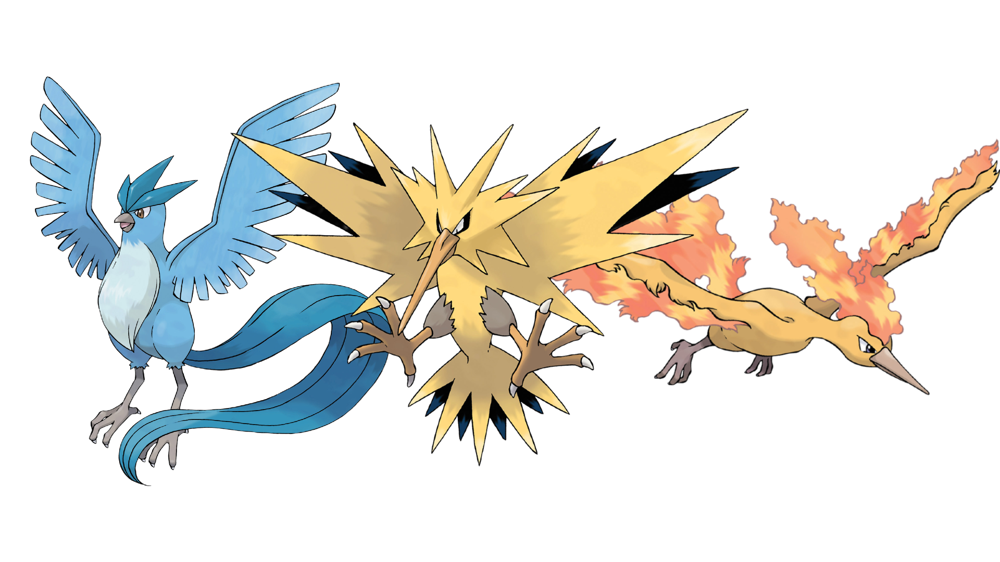
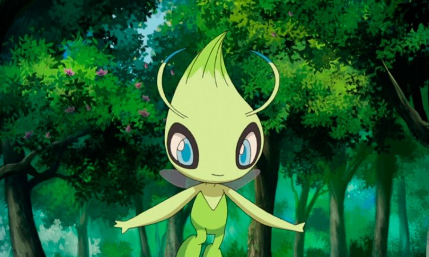
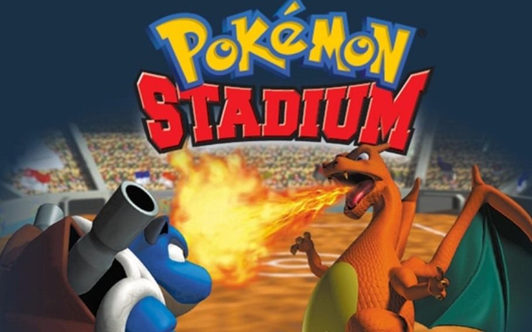

Primeira geração
A origem de Pokémon está em dois jogos chamados Poketto Monsutā Midori, mais conhecido como Pokémon Green, e Poketto Monsuttā Aka, conhecido no ocidente por Pokémon Red, lançados em 1996, no Japão. Pokémon Green nunca foi lançado fora do Japão, sendo lançado apenas Pokémon Red Version e Blue Version. Pokémon Blue também foi lançado no Japão, alguns meses após o lançamento dos dois primeiros. Devido ao sucesso destes jogos, os quais chegaram a ser alguns dos jogos mais vendidos do Japão em 1996, houve a produção de uma versão diferente, denominada Pokémon Yellow: Special Pikachu Edition; trazia como Pokémon principal um Pikachu que andava sempre seguindo o jogador fora de sua Pokébola. Pokémon Red & Blue vendeu mais de dez milhões de cópias no Ocidente e Pokémon Yellow vendeu mais de cinco milhões de cópias sozinho.
Pokémon não foi lançado apenas para o Game Boy; mas também para o Nintendo 64, com três jogos especialmente para o console: um chamado Pokémon Stadium, que usava monstrinhos transferidos do Game Boy ou contidos no próprio Stadium em batalhas 3D, além de trazer uma série de minigames. Outro foi um spin-off chamado Hey You, Pikachu!, que inovou ao implementar nos videogames o sistema de microfone. O terceiro jogo foi Pokémon Snap, onde o jogador controlava um fotógrafo de Pokémon e devia fotografá-los da melhor maneira possível. Houve ainda um spin-off da série para o Game Boy chamado Pokémon Pinball, que trazia um pinball usando Pokémon e também foi um dos poucos jogos do console a usar a função "rumble", que fazia o console vibrar ao fazer certos movimentos.
Segunda geração
À medida que conquistava cada vez mais fãs mundialmente, os criadores decidiram fazer uma continuação dos primeiros jogos. Isso gerou em duas novas versões, que traziam uma aventura diferente das anteriores, situada em uma Região ao lado do palco dos primeiros jogos, 100 novos Pokémon, totalizando 251, recursos novos, entre outros. Conhecidos como Pokémon Gold & Silver, eles serviram de base para o mecanismo dos seguintes, apresentando a distinção entre Pokémon machos e fêmeas, possibilitando o cruzamento de Pokémon, conceito muito usado para trocas entre jogadores, utilizando o tempo dentro do jogo, diferenciando o dia da noite e muitas outras novidades para os jogadores. Foram os jogos eletrônicos mais vendidos de 2000 e os mais vendidos do Game Boy Color O terceiro jogo ficou conhecido como Pokémon Crystal Version e destacava o Pokémon lendário Suicune. Apresentava das outras duas versões, alguns detalhes novos com mudanças na parte gráfica, animações dos desenhos dos Pokémon ao começarem uma batalha e era o único jogo da segunda geração em que havia a possibilidade de conseguir o lendário Celebi.
Para o Nintendo 64 houve uma nova versão de Pokémon Stadium conhecida no ocidente como Pokémon Stadium 2, que trazia os 251 Pokémon em 3D e as mesmas mecânicas, além de novos minigames, uma característica marcante da série Stadium. Depois de Stadium 2 houve mais alguns spin-offs da série, como Pokémon Puzzle Challenge, Pokémon Puzzle League, ambos do mesmo gênero de jogos, sendo um para o Game Boy Color e o outro para o Nintendo 64; ainda foram lançados Pokémon Trading Card Game e Pokémon Trading Card Game 2, jogos que se baseavam no Trading Card Game da série.
